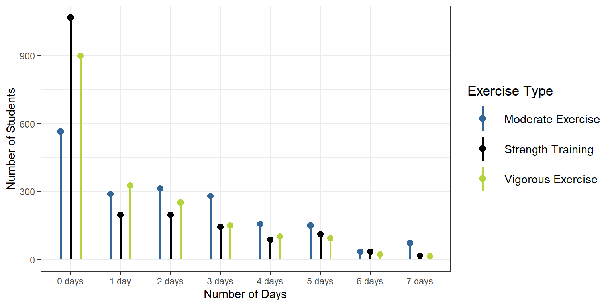

Physical Activity
Students were asked to select how many days in the last week they had done any of the following exercise types: moderate, vigorous, or strength training.[^1]
| Days | 0 | 1 | 2 | 3 | 4 | 5 | 6 | 7 |
| Moderate Exercise | 565 (30.4%) | 288 (15.5%) | 313 (16.8%) | 280 (15.1%) | 157 (8.4%) | 150 (8.1%) | 34 (1.8%) | 73 (3.9%) |
| Strength Training | 898 (48.4%) | 325 (17.5%) | 251 (13.5%) | 150 (8.1%) | 101 (5.4%) | 94 (5.1%) | 23 (1.2%) | 14 (0.8%) |
| Vigorous Training | 1066 (57.6%) | 197 (10.6%) | 197 (10.6%) | 145 (7.8%) | 87 (4.7%) | 110 (5.9%) | 34 (1.8%) | 16 (0.9%) |
Moderate Exercise
How often did you do moderate-intensity cardio or aerobic exercise (caused a noticeable increase in heart rate, such as brisk walk) for at least 30 minutes? (n=1860, 88% of 2110 reporting)
- The majority of students claim to have done moderate exercise at least once in the past week (1295 people). The general trend is that as the number of days increases, the number of students who exercised for those given number of days decreases. This seems to be the most commonly performed type of exercise from the graph above (typically the highest number of days per week out of all exercise types).
Strength Training
How often did you do 8-10 strength training exercises (such as resistance weight machines) for at least 8 repetitions each? (n=1852, 88% of 2110 reporting)
- Nearly half of the students claim to have not done strength training in the past week (898 people). The general trend is that as the number of days increases, the number of students who exercised for those given number of days decreases. Only a small number of people claim to do strength training for 4 or more days in the past week.
Vigorous Exercise
How often did you do vigorous-intensity cardio or aerobic exercise (caused large increases in breathing or heart rate, such as jogging) for at least 20 minutes? (n=1852, 88% of 2110 reporting)
- The majority of students claim to have done 0 days days of vigorous exercise in the past week (1066 people). The general trend is that as the number of days increases, the number of students who exercised for those given number of days decreases. Only a small number of people claim to do vigorous exercise for 4 or more days in the past week.